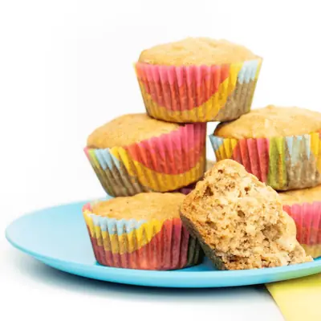

Kid-Requested Healthy Banana Muffins (20 minutes)

Ingredients
- 1 3/4 cup flour, (all-purpose, white whole wheat, 50/50 white and whole wheat, or a gluten-free blend)
- 1 tsp cinnamon
- 1 tsp baking powder
- 1/2 tsp baking soda
- 1/2 tsp salt
- 1 cup mashed bananas from 2-3 very ripe bananas
- 1/3 cup maple syrup
- 1/3 cup melted butter or oil, (avocado oil, olive oil, vegetable oil, coconut oil)
- 2 large eggs
- 1 tsp vanilla extract
- 1/2 cup toppings (optional)
Steps
- Prep: Preheat the oven to 350° F. Spray or line a muffin tin.
- Whisk: In a medium bowl, whisk together the flour, baking powder, baking soda, salt, and cinnamon.
- Stir: In a large bowl, stir together the mashed banana, maple syrup, butter/oil, eggs, and vanilla extract.
- Combine: pour the dry ingredients into the wet ingredients and stir until just combined. Do not overmix.
- Fill Muffin Tin: Scoop the batter into the muffin tin 3/4 of the way full. Add any toppings, if using.
- Bake: Place the muffin tin into the oven, and bake for 18-20 minutes or until just golden brown.
- Eat: Let cool for 5-10 minutes, and serve.
Recipe by Baby Foode, from Baby Foode. Saved here for personal use; the original has the full notes, tips and photos. Open original